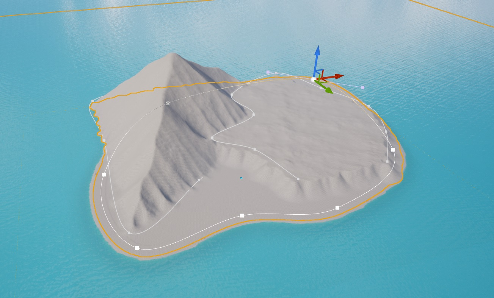
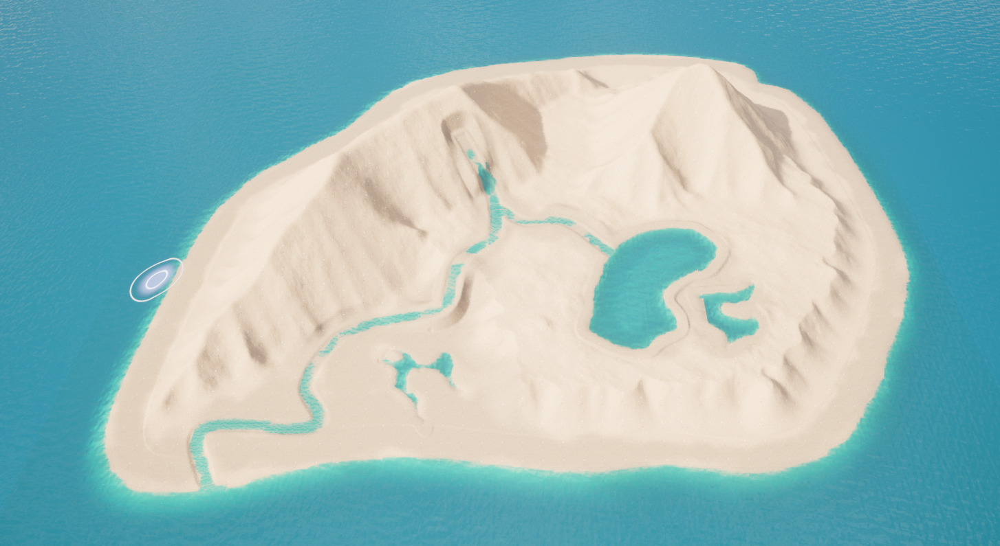
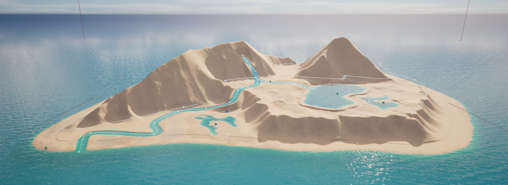
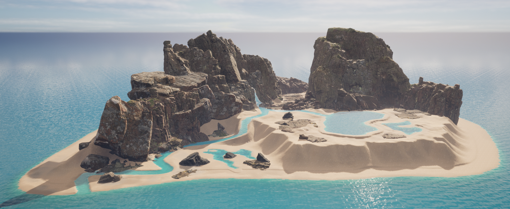
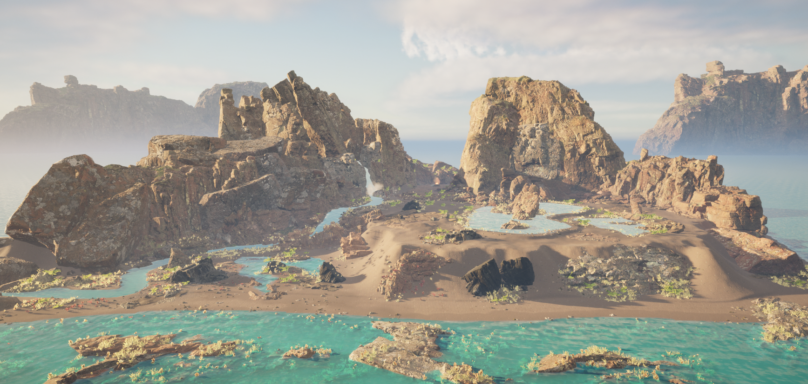

Tropical Island
Personal project I made using Unreal landscape tools, foliage tools, quixel megascans, and some lightning from Unreal.
Tools & resources used:
• Unreal Engine 5
• Quixel Megascans
Process

The first step in the process was to get a general shape using brushes from the landscape tool in UE5

Once I was happy with the shapes, scale and distribution, started applying some materials from megascans.

I used some lightning to get different tones in the sand, this was helpful to identify the parts that were not seamless or had repetitive patterns in the texture. This lightning was not the final setting.

Placing big shapes helped me to have a sense of the space and placing small elements like rocks, gave me a sense of scale and proportions.

Foliage brings details to big and small assets. In this case I placed foliage to the points of interest or key points, where I wanted the sight to be focused.

Last adjustments on lightning. To give a sensation of distance between foreground, midground and background, I put some big rocks behind and fog. This added a lot of value to the whole scene.

Finally, played a little bit with postprocessing effects and put a bonfire in the point of interest to get the attention of the viewer.
Short video of the environment (that blinking in the water is a bug from Unreal's water system)